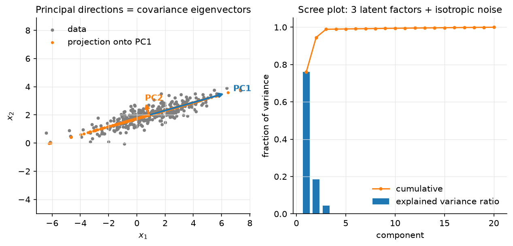

Dimensionality reduction¶
Why this matters at staff level. PCA is the derivation interviewers use to test whether you own the SVD: two different objectives (maximise variance, minimise reconstruction error) must land on the same eigenvectors, and you should be able to show it. In systems rounds it is the tool for shrinking embeddings before indexing, whitening features, and diagnosing what a representation has learned. t-SNE/UMAP come up as "what does this plot mean", and the strong answer is mostly about what it does not mean. Strong signal: both PCA derivations, the SVD implementation, randomized SVD for scale, and a clear statement of when to use PCA vs PQ vs an autoencoder for compression.
TL;DR: the interview card¶
- Centre \(X \in \R^{N\times d}\). Covariance \(C = X^TX/(N-1) = V\Lambda V^T\); thin SVD \(X = USV^T\) gives \(\Lambda = S^2/(N-1)\), principal directions = columns of \(V\) = right singular vectors.
- Variance maximisation: \(\max_{\norm{v}=1}v^TCv\) → top eigenvector (Rayleigh quotient); next directions orthogonal, by induction. Reconstruction: \(\min_{V_r}\norm{X - XV_rV_r^T}_F^2\) → same \(V_r\) (Eckart–Young). Both objectives are the same because \(\norm{X}_F^2 = \norm{XV_r}_F^2 + \norm{X - XV_rV_r^T}_F^2\).
- Projection \(Z = XV_r = U_rS_r\) (N, r); reconstruction \(\hat X = ZV_r^T\); dropped error \(= \sum_{i>r}s_i^2\); explained-variance ratio \(s_i^2/\sum_js_j^2\).
- Whitening: \(Z_w = XV_r\Lambda_r^{-1/2}\) has identity covariance; ZCA rotates back with \(V_r\).
- Cost: eig of \(C\) is \(O(Nd^2 + d^3)\); SVD \(O(Nd\min(N,d))\); randomized SVD \(O(Nd(r+p))\) with a sketch \(Y = X\Omega\), \(q\) power iterations, QR, small SVD.
- t-SNE: match neighbour distributions \(p_{ij}\) (Gaussian, perplexity sets the bandwidth) and \(q_{ij}\) (Student-t) by minimising \(\KL(P\|Q)\); heavy tails fix crowding. UMAP: fuzzy-simplicial cross-entropy, faster, better global structure, same caveats. Cluster sizes and inter-cluster distances in these plots carry no information. Do not use them as features.
- Autoencoders: a linear AE with squared loss learns the PCA subspace (not the basis); non-linear AEs and VAEs are Part IX.
- Production: PCA (often with whitening) before PQ in FAISS pipelines (
PCAR64,IVF…,PQ…index factory strings); Pinterest's unified visual embedding and Spotify's Annoy sit downstream of exactly this compression.
1. Intuition first¶
Four points in the plane: \((2,1), (-2,-1), (1,0.5), (-1,-0.5)\). They lie exactly on the line \(y = x/2\). Centred already (mean zero). Covariance \(C = \frac13\begin{pmatrix}10 & 5\\ 5 & 2.5\end{pmatrix}\), rank one, eigenvector \(v_1 \propto (2, 1)/\sqrt5\) with eigenvalue \(12.5/3\) and \(v_2 \perp v_1\) with eigenvalue \(0\). Projecting onto \(v_1\) keeps every point exactly (\(Z = XV_1\) has 4 numbers instead of 8); projecting onto \(v_2\) gives all zeros. PCA is "find the line that the cloud lies closest to, then the next orthogonal line, and so on"; the variance along each is the eigenvalue, and the sum of the eigenvalues you drop is exactly the squared error you accept.

Figure. Left: correlated 2-D data with the two principal directions (arrow lengths ∝ standard deviation along each) and the rank-1 reconstruction (orange), every point snapped onto the PC1 line. Right: a scree plot for a 20-D dataset generated from 3 latent factors plus isotropic noise; three components carry ~99% of the variance; the rest is a flat noise floor.
2. The math¶
Uses: eigendecomposition of symmetric matrices, Rayleigh quotients, the SVD and Eckart–Young (linear algebra); Lagrange multipliers (optimization).
Throughout, \(X\) is centred: \(X \leftarrow X - \mathbf 1\mu^T\) with \(\mu = \frac1N X^T\mathbf 1\). \(C = \frac{1}{N-1}X^TX \in \R^{d\times d}\) is symmetric PSD, so \(C = V\Lambda V^T\) with orthonormal \(V\) and \(\lambda_1\ge\dots\ge\lambda_d\ge0\).
2.1 Derivation 1: maximise projected variance¶
The projection of the data onto a unit vector \(v\) is \(Xv \in \R^N\) with sample variance \(\frac1{N-1}\norm{Xv}^2 = v^TCv\). Maximise it subject to \(\norm{v} = 1\):
So \(v\) is an eigenvector, and the objective at an eigenvector is \(v^TCv = \lambda\); pick the largest, \(v_1\). For the second direction add the constraint \(v^Tv_1 = 0\); the multiplier for it vanishes at the optimum (multiply the stationarity condition by \(v_1^T\)), so again \(Cv = \lambda v\) with \(v \perp v_1\), giving \(v_2\). By induction the top-\(r\) subspace is spanned by \(v_1..v_r\) and captures variance \(\sum_{i\le r}\lambda_i\).
Meaning: the principal components are the directions in which the data is most spread out, in order, and they are orthogonal because \(C\) is symmetric.
2.2 Derivation 2: minimise reconstruction error¶
Represent each point by its coordinates in an \(r\)-dimensional orthonormal basis \(V_r \in \R^{d\times r}\) (\(V_r^TV_r = I_r\)): \(z_i = V_r^Tx_i\), \(\hat x_i = V_rz_i = V_rV_r^Tx_i\). The total squared error is
using \(V_r^TV_r = I\) so that \((V_rV_r^T)^2 = V_rV_r^T\). Minimising the error is therefore identical to maximising \(\sum_jv_j^TCv_j\) over orthonormal \(v_j\), which is Derivation 1. The optimum is again the top-\(r\) eigenvectors, and the minimum error is \((N-1)\sum_{i>r}\lambda_i = \sum_{i>r}s_i^2\).
Meaning: "keep the most variance" and "lose the least information (in \(L_2\))" are the same criterion, because total variance is fixed and splits exactly into kept plus dropped. This is the Eckart–Young theorem in disguise: \(XV_rV_r^T = U_rS_rV_r^T\) is the best rank-\(r\) approximation of \(X\) in Frobenius norm.
2.3 SVD implementation, explained variance, whitening¶
Thin SVD \(X = USV^T\), \(U \in \R^{N\times r}\), \(S = \diag(s_1..s_r)\), \(V \in \R^{d\times r}\). Then \(X^TX = VS^2V^T\), so \(V\) is the eigenvector matrix of \(C\) with \(\lambda_i = s_i^2/(N-1)\): you never need to form \(C\). Projected coordinates: \(Z = XV_r = U_rS_r\) (N, r). Explained variance ratio of component \(i\): \(s_i^2/\sum_js_j^2\). Numerically the SVD route is better because forming \(X^TX\) squares the condition number.
Whitening. \(Z = XV_r\) has diagonal covariance \(\Lambda_r\); scaling gives \(Z_w = XV_r\Lambda_r^{-1/2}\) with \(\operatorname{Cov}(Z_w) = I_r\). Whitening makes every direction equally important, useful before k-means/PQ (so that squared distance is not dominated by the top component), before ICA, and for conditioning (linear regression §2.3). ZCA whitening \(XV\Lambda^{-1/2}V^T\) is the unique whitening closest to the original coordinates.
2.4 Randomized SVD for scale¶
With \(N = 10^8\) embeddings of \(d = 1024\) a full SVD is impossible, but a rank-\(r\) factor with \(r = 128\) is what you want. Halko, Martinsson & Tropp:
- Draw Gaussian \(\Omega \in \R^{d\times(r+p)}\) (\(p \approx 10\) oversampling); sketch \(Y = X\Omega\) (N, r+p), one pass over \(X\).
- Power iterations: \(Y \leftarrow X(X^TY)\), \(q = 1\)–\(3\) times, re-orthonormalising; this sharpens the decay of the captured spectrum from \(s_i\) to \(s_i^{2q+1}\) so the sketch ignores the tail.
- QR: \(Y = QR\), \(Q \in \R^{N\times(r+p)}\) orthonormal, spanning (approximately) the top-\((r+p)\) left singular subspace.
- Project: \(B = Q^TX\) (r+p, d), tiny; compute its SVD \(B = \tilde US\tilde V^T\); set \(U = Q\tilde U\).
Cost \(O(Nd(r+p)\cdot(q+1))\) and \(2(q+1)\) passes over the data, which can be streamed.
The expected error is within a small factor of the optimal \(s_{r+1}\), improving
rapidly with \(q\). This is what sklearn.decomposition.PCA(svd_solver="randomized"),
Spark, and FAISS's PCA training use.
2.5 t-SNE and UMAP: what they optimise and why distances lie¶
t-SNE. In the input space define neighbour probabilities \(p_{j\mid i} = \frac{\exp(-\norm{x_i-x_j}^2/2\sigma_i^2)}{\sum_{k\ne i}\exp(-\norm{x_i-x_k}^2/2\sigma_i^2)}\), with \(\sigma_i\) chosen per point so that the perplexity \(2^{H(p_{\cdot\mid i})}\) equals a user value (typically 5–50): the effective number of neighbours. Symmetrise \(p_{ij} = (p_{j\mid i} + p_{i\mid j})/2N\). In the 2-D map define \(q_{ij} = \frac{(1 + \norm{y_i-y_j}^2)^{-1}}{\sum_{k\ne l}(1+\norm{y_k-y_l}^2)^{-1}}\), a Student-t kernel with one degree of freedom, and minimise \(\KL(P\|Q) = \sum_{ij}p_{ij}\log\frac{p_{ij}}{q_{ij}}\) by gradient descent on \(y\). The heavy tail of \(q\) lets moderately distant points in input space be placed far apart in the map without penalty, which fixes the "crowding problem" of the original SNE. The KL is asymmetric: it punishes putting close input points far apart (large \(p\), small \(q\)) far more than the reverse. So t-SNE preserves local neighbourhoods and nothing else.
UMAP. Builds a fuzzy \(k\)-NN graph in input space with locally adaptive distances (so that each point's neighbourhood is normalised), does the same in the embedding with a smooth curve \((1 + a\norm{y_i-y_j}^{2b})^{-1}\), and minimises the fuzzy cross-entropy between the two graphs with negative sampling. It is faster, its optimisation includes a repulsive term for non-neighbours (so global arrangement is somewhat more meaningful than t-SNE's), and it can embed into any dimension and transform new points. The theoretical framing (Riemannian geometry, fuzzy simplicial sets) motivates the graph construction; the algorithm you run is a graph-layout optimisation.
Why distances between clusters are meaningless. Both objectives are dominated by neighbour-preservation terms; for a pair of points that are not neighbours in input space, \(p_{ij} \approx 0\) and the objective barely cares where they end up relative to each other beyond "not on top of a neighbour". Cluster sizes are also arbitrary: t-SNE's per-point \(\sigma_i\) expands dense clusters and contracts sparse ones, equalising them. Wattenberg, Viégas & Johnson's Distill article shows the same data producing clusters of different sizes and separations under different perplexities, and random noise producing apparent clusters. Rules: try several perplexities; treat topology (which points are together) as evidence and geometry (how far, how big) as noise; never feed a t-SNE/UMAP map into a downstream model or a distance-based metric.
2.6 Autoencoders (teaser)¶
A linear autoencoder \(\hat x = W_2W_1x\) with \(W_1 \in \R^{r\times d}\), \(W_2 \in \R^{d\times r}\), trained with squared error, has its global minima at \(W_2W_1 = V_rV_r^T\): it recovers the PCA subspace but not the ordered orthonormal basis (any invertible \(r\times r\) change of basis inside the subspace is equally good). Non-linear encoders/decoders learn curved manifolds; variational autoencoders add a prior on the code and are the amortised-EM objects of the previous chapter. See Part IX.
3. Implementation¶
src/mlbook/classical/pca.py.
def pca_eig(X, n_components):
Xc, mu = center(X)
C = Xc.T @ Xc / (X.shape[0] - 1) # (d, d)
evals, evecs = np.linalg.eigh(C) # (d,), (d, d) ascending
order = np.argsort(evals)[::-1][:n_components] # (r,)
V = evecs[:, order] # (d, r)
V = V * np.sign(V[np.abs(V).argmax(axis=0), np.arange(V.shape[1])])[None, :] # (d, r) sign fix
return V, evals[order], mu
eigh (symmetric solver) returns ascending eigenvalues, hence the reversal.
Eigenvectors are defined up to sign; fixing the sign so the largest-magnitude entry
is positive makes results reproducible across runs and solvers, which matters when
you compare pca_eig with pca_svd in a test.
def pca_svd(X, n_components):
Xc, mu = center(X)
_, s, Vt = np.linalg.svd(Xc, full_matrices=False) # s: (min(N,d),), Vt: (min(N,d), d)
V = Vt[:n_components].T # (d, r)
V = V * np.sign(V[np.abs(V).argmax(axis=0), np.arange(V.shape[1])])[None, :] # (d, r) sign fix
var = s[:n_components] ** 2 / (X.shape[0] - 1) # (r,)
return V, var, mu
Same outputs, no \(d\times d\) matrix, and the variance comes from \(s_i^2/(N-1)\)
exactly as §2.3 says. transform is (X - mu) @ V (N, r); inverse_transform is
Z @ V.T + mu (N, d); whiten divides the projection by sqrt(var + eps).
def randomized_svd(A, rank, n_oversample=10, n_power_iters=2, seed=0):
rng = np.random.default_rng(seed)
N, d = A.shape
Omega = rng.standard_normal((d, rank + n_oversample)) # (d, r+p)
Y = A @ Omega # (N, r+p)
for _ in range(n_power_iters):
Y = A @ (A.T @ Y) # (N, r+p)
Y, _ = np.linalg.qr(Y) # re-orthonormalise for stability
Q, _ = np.linalg.qr(Y) # (N, r+p)
B = Q.T @ A # (r+p, d)
Ub, s, Vt = np.linalg.svd(B, full_matrices=False) # (r+p, r+p), (r+p,), (r+p, d)
U = Q @ Ub # (N, r+p)
return U[:, :rank], s[:rank], Vt[:rank]
Keep the QR inside the power loop. Without it, \(Y\)'s columns all converge to the top singular vector and the sketch loses rank in floating point.
How you'd test it. tests/test_classical_pca.py: pca_eig and pca_svd agree
with each other and with np.linalg.svd of the centred data (up to sign) to
\(10^{-8}\); variances equal \(s_i^2/(N-1)\); projections equal \(U_rS_r\); the reconstruction
error equals the dropped variance exactly; whitened coordinates have identity
covariance; randomized SVD recovers the top-5 singular values of a gapped
400×50 matrix to relative \(10^{-3}\) and its rank-5 reconstruction to 1%.
Full implementation: src/mlbook/classical/pca.py
"""PCA via covariance eigendecomposition and via SVD, plus whitening and a
randomized SVD for large matrices.
With centred ``X`` (N, d): ``X = U S V^T``, covariance ``C = X^T X / (N-1)
= V (S²/(N-1)) V^T``. The principal directions are the columns of ``V`` (the
eigenvectors of ``C``), the variance along direction ``i`` is ``s_i² / (N-1)``,
and the projection is ``Z = X V_r = U_r S_r`` (N, r).
"""
from __future__ import annotations
import numpy as np
def center(X: np.ndarray) -> tuple[np.ndarray, np.ndarray]:
"""Return ``(X - mean, mean)``. ``X``: (N, d) -> ((N, d), (d,))."""
mu = X.mean(axis=0) # (d,)
return X - mu, mu
def pca_eig(X: np.ndarray, n_components: int) -> tuple[np.ndarray, np.ndarray, np.ndarray]:
"""PCA by eigendecomposition of the covariance matrix.
``X``: (N, d) -> ``(components (d, r), explained_variance (r,), mean (d,))``.
Components are sorted by decreasing variance; sign is fixed so the largest
|entry| of each component is positive (eigenvectors are defined up to sign).
Cost ``O(N d² + d³)``: fine when ``d`` is small, wasteful when ``d >> N``.
"""
Xc, mu = center(X)
C = Xc.T @ Xc / (X.shape[0] - 1) # (d, d)
evals, evecs = np.linalg.eigh(C) # (d,), (d, d) ascending
order = np.argsort(evals)[::-1][:n_components] # (r,)
V = evecs[:, order] # (d, r)
V = V * np.sign(V[np.abs(V).argmax(axis=0), np.arange(V.shape[1])])[None, :] # (d, r) sign fix
return V, evals[order], mu
def pca_svd(X: np.ndarray, n_components: int) -> tuple[np.ndarray, np.ndarray, np.ndarray]:
"""PCA by thin SVD of the centred data (never forms the ``d × d`` covariance).
``X``: (N, d) -> ``(components (d, r), explained_variance (r,), mean (d,))``.
Cost ``O(N d min(N, d))``; numerically better conditioned than ``pca_eig``
because it never squares the singular values.
"""
Xc, mu = center(X)
_, s, Vt = np.linalg.svd(Xc, full_matrices=False) # s: (min(N,d),), Vt: (min(N,d), d)
V = Vt[:n_components].T # (d, r)
V = V * np.sign(V[np.abs(V).argmax(axis=0), np.arange(V.shape[1])])[None, :] # (d, r) sign fix
var = s[:n_components] ** 2 / (X.shape[0] - 1) # (r,)
return V, var, mu
def transform(X: np.ndarray, V: np.ndarray, mu: np.ndarray) -> np.ndarray:
"""Project: ``Z = (X - μ) V``. ``X``: (N, d), ``V``: (d, r) -> (N, r)."""
return (X - mu) @ V # (N, r)
def inverse_transform(Z: np.ndarray, V: np.ndarray, mu: np.ndarray) -> np.ndarray:
"""Reconstruct: ``X̂ = Z V^T + μ``. ``Z``: (N, r), ``V``: (d, r) -> (N, d)."""
return Z @ V.T + mu # (N, d)
def explained_variance_ratio(var: np.ndarray, total_var: float) -> np.ndarray:
"""``var_i / total``. ``var``: (r,) -> (r,). ``total_var`` = trace of the covariance."""
return var / total_var
def whiten(X: np.ndarray, V: np.ndarray, var: np.ndarray, mu: np.ndarray, eps: float = 1e-8) -> np.ndarray:
"""PCA whitening: ``Z = (X - μ) V diag(1/√var)`` so ``cov(Z) = I``.
``X``: (N, d), ``V``: (d, r), ``var``: (r,) -> (N, r).
"""
return transform(X, V, mu) / np.sqrt(var + eps)[None, :] # (N, r)
def randomized_svd(
A: np.ndarray, rank: int, n_oversample: int = 10, n_power_iters: int = 2, seed: int = 0
) -> tuple[np.ndarray, np.ndarray, np.ndarray]:
"""Halko–Martinsson–Tropp randomized range finder + small SVD.
1. Sketch: ``Y = A Ω`` with Gaussian ``Ω`` (d, r + p);
2. power iterations ``Y ← A (A^T Y)`` sharpen the spectrum;
3. orthonormalise ``Q = qr(Y)``; 4. ``B = Q^T A`` is small; SVD it;
5. ``U = Q Ũ``.
``A``: (N, d) -> ``(U (N, r), s (r,), Vt (r, d))``. Cost ``O(N d (r + p))``
versus ``O(N d min(N, d))`` for a full SVD.
"""
rng = np.random.default_rng(seed)
N, d = A.shape
Omega = rng.standard_normal((d, rank + n_oversample)) # (d, r+p)
Y = A @ Omega # (N, r+p)
for _ in range(n_power_iters):
Y = A @ (A.T @ Y) # (N, r+p)
Y, _ = np.linalg.qr(Y) # re-orthonormalise for stability
Q, _ = np.linalg.qr(Y) # (N, r+p)
B = Q.T @ A # (r+p, d)
Ub, s, Vt = np.linalg.svd(B, full_matrices=False) # (r+p, r+p), (r+p,), (r+p, d)
U = Q @ Ub # (N, r+p)
return U[:, :rank], s[:rank], Vt[:rank]
Retype by hand¶
Reproduce from memory, all in src/mlbook/classical/pca.py:
| Symbol | What it must do | Target time |
|---|---|---|
center, pca_eig |
centre, covariance, eigh, descending order, sign fix |
8 min |
pca_svd |
thin SVD, \(V = V_t^T\), \(s^2/(N-1)\) | 5 min |
transform, inverse_transform, whiten |
\((X-\mu)V\); \(ZV^T + \mu\); divide by \(\sqrt{\lambda}\) | 5 min |
randomized_svd |
sketch, power iterations with QR, \(B = Q^TA\), small SVD, \(U = Q\tilde U\) | 12 min |
Fine to just read: explained_variance_ratio.
Check with pytest tests/test_classical_pca.py -q. PCA both ways: 15 minutes;
whole file: 30 minutes.
4. Systems view: cost, failure modes, trade-offs¶
| Method | Cost | Output | Preserves | Use for |
|---|---|---|---|---|
| PCA (eig) | \(O(Nd^2 + d^3)\) | linear map \(V_r\) | global \(L_2\) structure | \(d \le 10^4\), one-shot |
| PCA (SVD) | \(O(Nd\min(N,d))\) | same | same | default |
| Randomized SVD | \(O(Nd(r+p)q)\), streaming | same, approximate | same | \(N\) or \(d\) huge, \(r \ll d\) |
| t-SNE | \(O(N^2)\), \(O(N\log N)\) with Barnes–Hut | 2–3-D points, no map for new data | local neighbourhoods | looking at data |
| UMAP | \(O(N^{1.14})\) empirically | any \(r\), has transform |
local + some global | looking at data; occasionally as a preprocessing step, with caution |
| Autoencoder | \(O(\text{epochs}\cdot N\cdot\text{params})\) | non-linear map | task-dependent | non-linear compression, generative modelling |
| PQ (k-means codebooks) | \(O(Nkd)\) | bytes | distances, approximately | index memory; usually after PCA |
Failure modes:
- Forgetting to centre makes the first component point at the mean, not at the direction of variance.
- Unscaled features: PCA on raw covariance is dominated by the highest-variance unit (income in dollars vs age in years). Standardise first (PCA on the correlation matrix) unless the units are commensurate, as with embedding coordinates or pixels.
- Variance ≠ relevance: the top components carry the most variance, not the most label information; a classifier on the bottom components can beat one on the top. Use LDA/supervised reduction if you have labels.
- Non-linear manifolds: a Swiss roll has 3 significant PCs but intrinsic dimension 2; PCA cannot unroll it. Kernel PCA, autoencoders, or UMAP can.
- Outliers dominate the covariance (their squared distance is huge); robust PCA or clipping first.
- Reading t-SNE/UMAP geometry (sizes, distances, densities) as evidence.
- Re-fitting the projection when the embedding model changes without re-training the index: the codebooks downstream were trained on the old coordinates.
When to use what. Need a cheap, linear, invertible compression whose error you can bound → PCA. Need to shrink embeddings before an ANN index → PCA (often with whitening/random rotation) to \(d' \approx 64\)–\(256\), then PQ; PCA removes the low-variance tail that PQ would waste bytes on. Need to look at a representation → UMAP or t-SNE, several perplexities, colour by known labels, draw no metric conclusions. Need a non-linear latent space you will sample from or edit → VAE/autoencoder. Need supervised reduction → LDA (probabilistic models) or the penultimate layer of a classifier.
5. In production¶
Meta (FAISS): PCA before product quantisation
Problem: index \(10^9\) vectors of \(d = 128\)–\(1024\) within a memory budget.
What they built: the index-factory grammar composes a PCAR<d'> pre-transform
(PCA to \(d'\) dims followed by a random rotation so that variance is spread evenly
across the PQ sub-vectors) with an IVF coarse quantiser and a PQ code; the
wiki's guidelines recommend the pre-transform when the input dimension is
large relative to the code size. Why PCA and not a learned encoder: it is a
linear map with a bounded, known error, trains in seconds on a sample, and its
output is exactly what PQ's per-sub-vector k-means needs. FAISS wiki.
The index factory,
Guidelines to choose an index;
Johnson, Douze, Jégou 2017, arXiv:1702.08734.
Pinterest: one unified visual embedding, compressed for serving
Problem: several product-specific visual embeddings were expensive to maintain and improve in lockstep. What they built: a single multi-task embedding for all visual search products; the accompanying paper discusses reducing the embedding dimension for storage and retrieval cost, and the engineering post describes the retrieval stack this feeds. Zhai et al., "Learning a Unified Embedding for Visual Search at Pinterest", KDD 2019. arXiv:1908.01707; engineering post. medium.com/pinterest-engineering. Pinterest's earlier "Visual Search at Pinterest" (KDD 2015, arXiv:1505.07647) describes the original pipeline of CNN features → compact binarised/compressed codes → ANN.
Spotify: Annoy over matrix-factorisation vectors
Spotify's ANN library indexes low-dimensional user/item vectors from matrix factorisation (itself a low-rank, PCA-like decomposition of the interaction matrix) for music recommendation; the README states the design goal of tiny memory-mapped indexes shared across processes. github.com/spotify/annoy.
How to Use t-SNE Effectively: Distill (Google PAIR)
Not a deployment but the reference every team should read before shipping an embedding-visualisation dashboard: interactive examples where perplexity changes cluster shapes, cluster sizes and distances mean nothing, and pure noise looks clustered. Wattenberg, Viégas, Johnson, 2016. distill.pub/2016/misread-tsne.
6. Interview questions and strong answers¶
Derive PCA two ways and show they agree.
Variance: maximise \(v^TCv\) s.t. \(\norm{v}=1\) → Lagrangian → \(Cv = \lambda v\), top eigenvector; induct with orthogonality. Reconstruction: error \(= \norm{X}_F^2 - (N-1)\sum_jv_j^TCv_j\) for orthonormal \(v_j\), so minimising error is maximising the same sum. Same eigenvectors, and the dropped error equals the dropped variance. Staff follow-up: why does the identity \(\norm{X}_F^2 = \text{kept} + \text{dropped}\) hold? Pythagoras: \(XV_rV_r^T\) and \(X - XV_rV_r^T\) are orthogonal in Frobenius inner product because \(V_rV_r^T\) is an orthogonal projector.
You have 10⁸ × 1024 embeddings and need the top 128 components. How?
Randomized SVD: sketch with a \(1024\times138\) Gaussian, 2 power iterations with QR, project to a \(138\times1024\) matrix, small SVD. Four streaming passes over the data, \(O(Nd\cdot138)\) FLOPs, embarrassingly parallel across shards (accumulate \(A^TY\)). Or subsample \(10^6\) rows; the covariance estimate converges fast. Follow-up: what do power iterations buy? Error depends on \(s_{r+1}/s_r\) raised to \(2q+1\); two iterations turn a slow spectral decay into a sharp one.
Why PCA before PQ, and why whiten or rotate?
PQ splits \(d\) into \(m\) sub-vectors and spends 8 bits on each; if variance is concentrated in a few coordinates, most sub-vectors encode noise. PCA drops the tail; a random rotation (or whitening) after PCA balances variance across sub-vectors so each codebook is equally used. Follow-up: why not whiten fully? Whitening amplifies the noisy low-variance directions to unit variance and hurts recall; FAISS uses PCA + rotation, sometimes a partial whitening.
What does this t-SNE plot tell us?
Which points are near each other in the original space. That is the whole of it.
Cluster sizes, gaps and shapes depend on perplexity and initialisation; noise
can look clustered. Ask what perplexity, whether it was run several times, and
whether the same structure appears in UMAP with different n_neighbors.
Follow-up: could we use the 2-D coordinates as features? No. There is no
transform for new points in t-SNE, the coordinates carry no metric meaning,
and two runs are not aligned with each other.
PCA vs autoencoder for compression?
Linear AE = PCA subspace; a non-linear AE can do better on curved manifolds at the cost of training, non-convexity, and no bound on error. For embeddings from a modern encoder the manifold is close to linear at the scale you care about and PCA + PQ is standard; for images or raw sensor data an AE wins. Follow-up: why does a linear AE not recover the ordered basis? The loss is invariant to any invertible transform inside the subspace; add a per-component loss schedule (nested dropout) or orthogonality penalty to recover it.
Explain whitening and where it helps or hurts.
\(Z_w = XV\Lambda^{-1/2}\), identity covariance. Helps: optimisation conditioning, k-means/PQ (isotropic distances), ICA. Hurts: amplifies noise directions with tiny \(\lambda_i\), always add \(\epsilon\) and/or truncate to \(r\) components first.
7. Exercises¶
★ Exercise 1. Show that the total variance \(\tr(C) = \sum_i\lambda_i = \frac1{N-1}\sum_js_j^2\) and that the explained-variance ratio of the first \(r\) components is \(\sum_{i\le r}s_i^2/\sum_js_j^2\).
Solution
\(\tr(C) = \tr(V\Lambda V^T) = \tr(\Lambda V^TV) = \sum_i\lambda_i\); and \(\lambda_i = s_i^2/(N-1)\) from \(X^TX = VS^2V^T\). The ratio follows since \((N-1)\) cancels.
★★ Exercise 2. Prove that for an orthogonal projector \(P = V_rV_r^T\), \(\norm{X}_F^2 = \norm{XP}_F^2 + \norm{X(I - P)}_F^2\).
Solution
\(\norm{X}_F^2 = \tr(X^TX) = \tr(X^T(P + I - P)X)\). Cross terms: \(\tr((XP)^T X(I-P)) = \tr(PX^TX(I - P)) = \tr(X^TX(I-P)P) = 0\) since \((I - P)P = P - P^2 = 0\). So the two pieces add.
★★ Exercise 3 (coding). Implement pca_incremental(batches, n_components) that
accumulates \(\sum_i x_i\) and \(\sum_i x_ix_i^T\) over a stream of batches and returns the
same components as pca_eig on the concatenated data. Verify on the test's
_data() split into 10 batches.
Solution
def pca_incremental(batches, n_components):
n, s1, s2 = 0, None, None
for B in batches: # B: (b, d)
n += B.shape[0]
s1 = B.sum(axis=0) if s1 is None else s1 + B.sum(axis=0) # (d,)
s2 = B.T @ B if s2 is None else s2 + B.T @ B # (d, d)
mu = s1 / n # (d,)
C = (s2 - n * np.outer(mu, mu)) / (n - 1) # (d, d)
evals, evecs = np.linalg.eigh(C)
order = np.argsort(evals)[::-1][:n_components]
V = evecs[:, order]
V = V * np.sign(V[np.abs(V).argmax(axis=0), np.arange(V.shape[1])])[None, :]
return V, evals[order], mu
np.testing.assert_allclose against pca.pca_eig(X, 2) on
np.array_split(X, 10); the centred scatter identity
\(\sum(x-\mu)(x-\mu)^T = \sum xx^T - n\mu\mu^T\) is what makes one pass sufficient.
★★ Exercise 4. Show that in t-SNE the gradient of \(\KL(P\|Q)\) with respect to \(y_i\) is \(4\sum_j(p_{ij} - q_{ij})(1 + \norm{y_i - y_j}^2)^{-1}(y_i - y_j)\) and interpret the sign of each term.
Solution
Write \(d_{ij} = \norm{y_i - y_j}\), \(w_{ij} = (1 + d_{ij}^2)^{-1}\), \(Z = \sum_{k\ne l}w_{kl}\), \(q_{ij} = w_{ij}/Z\). \(\KL = \sum p_{ij}\log p_{ij} - \sum p_{ij}\log w_{ij} + \log Z\). \(\partial\log w_{ij}/\partial y_i = -2w_{ij}(y_i - y_j)\) and \(\partial\log Z/\partial y_i = -\frac{2}{Z}\sum_j 2w_{ij}^2(y_i - y_j)\cdot\tfrac12\cdot 2\), carefully, each unordered pair appears twice in \(Z\), giving \(\partial\log Z/\partial y_i = -4\sum_jq_{ij}w_{ij}(y_i-y_j)\). Combining and using \(\sum_jp_{ij}\) over both orderings gives \(4\sum_j(p_{ij} - q_{ij})w_{ij}(y_i - y_j)\). Pairs with \(p_{ij} > q_{ij}\) (should be closer) attract; pairs with \(p_{ij} < q_{ij}\) (too close in the map) repel, but only weakly, because \(w_{ij}\) decays with distance. That weak long-range repulsion is why global layout is arbitrary.
★★★ Exercise 5. Show that the global minima of the linear autoencoder loss \(\norm{X - XW_1^TW_2^T}_F^2\) with \(W_1 \in \R^{r\times d}\), \(W_2 \in \R^{d\times r}\) satisfy \(W_2W_1 = V_rV_r^T\) (the PCA projector), and that there are no other local minima.
Solution
Sketch (Baldi & Hornik 1989): \(M = W_2W_1\) has rank \(\le r\), and for any rank-\(r\) \(M\) the loss is \(\norm{X - XM^T}_F^2 \ge \norm{X - XV_rV_r^T}_F^2\) by Eckart–Young, with equality iff \(XM^T = U_rS_rV_r^T\), i.e. \(M = V_rV_r^T\) (when the top \(r\) singular values are distinct). For the "no other local minima" claim: at a critical point \(W_2\) spans a set of \(r\) eigenvectors of \(C\) and the loss equals the sum of the other eigenvalues; any set other than the top \(r\) can be improved by rotating one direction toward a larger-eigenvalue eigenvector, so those critical points are saddles.
References¶
- Halko, N., Martinsson, P.-G., Tropp, J. "Finding Structure with Randomness: Probabilistic Algorithms for Constructing Approximate Matrix Decompositions." SIAM Review 53(2), 2011. arXiv:0909.4061
- van der Maaten, L., Hinton, G. "Visualizing Data using t-SNE." JMLR 9, 2008. jmlr.org
- McInnes, L., Healy, J., Melville, J. "UMAP: Uniform Manifold Approximation and Projection for Dimension Reduction." 2018. arXiv:1802.03426
- Wattenberg, M., Viégas, F., Johnson, I. "How to Use t-SNE Effectively." Distill, 2016. distill.pub
- Johnson, J., Douze, M., Jégou, H. "Billion-scale similarity search with GPUs." 2017. arXiv:1702.08734; FAISS wiki The index factory
- Jégou, H., Douze, M., Schmid, C. "Product Quantization for Nearest Neighbor Search." IEEE TPAMI 33(1), 2011. ACM DL
- Zhai, A. et al. "Learning a Unified Embedding for Visual Search at Pinterest." KDD 2019. arXiv:1908.01707
- Jing, Y. et al. "Visual Search at Pinterest." KDD 2015. arXiv:1505.07647
- Kingma, D., Welling, M. "Auto-Encoding Variational Bayes." 2013. arXiv:1312.6114
- Hastie, Tibshirani, Friedman. The Elements of Statistical Learning, §14.5. Free PDF